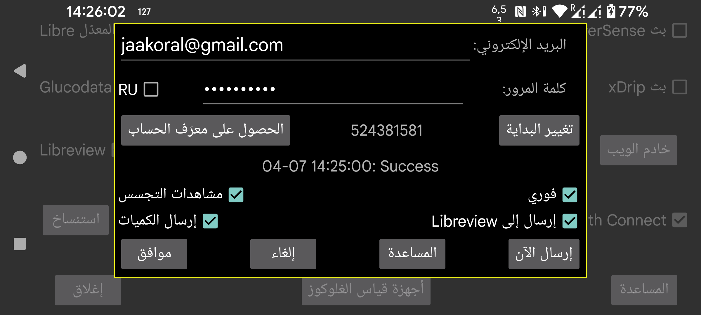

ar be de es fr hi it ja ko nl pl pt ru tr uk uz zh en
يمكن لـ Juggluco إرسال بيانات الغلوكوز والكميات إلى Libreview.
وكما يفعل تطبيق LibreLink، فإنه يرسل إلى Libreview بيانات آخر 89 يومًا.
لاستخدام هذه الخدمة، عليك إنشاء حساب Libreview على https://libreview.com وإدخال عنوان البريد الإلكتروني وكلمة المرور الخاصة به هنا. لا تُرسل بيانات الفترة نفسها مرات متعددة إلى حساب Libreview نفسه (مثلًا من تطبيق LibreLink ومن Juggluco معًا). يمكنك حذف الأجهزة الموجودة في Libreview من خلال Account Settings->My devices، أو استخدام حساب Libreview جديد.
ولتفعيل ذلك، عليك أيضًا تحديد خيار «إرسال إلى Libreview».
سيرسل Juggluco البيانات الجديدة إلى Libreview في كل مرة تغادر فيها Juggluco إذا لم يكن قد أرسل خلال العشرين دقيقة السابقة. ويمكنك أيضًا إرسالها يدويًا إلى Libreview بالضغط على «إرسال الآن».
وإلى جانب قيم الغلوكوز، يمكن أيضًا إرسال الكميات إلى Libreview. ولأجل ذلك عليك لمس «إرسال الكميات» وتحديد معنى كل تسمية.
RU: عليك تفعيل هذا الخيار إذا كنت تستخدم https://libreview.ru بدلًا من https://libreview.com. ينطبق هذا فقط على حساسات Libre 2. أما حساسات Libre 3 فلا يمكن استخدامها إلا مع libreview.com، لأنه لا يوجد تطبيق Abbott Libre 3 روسي.
فوري: أرسل قيم الغلوكوز إلى Libreview فور وصولها من حساسات Libre 2 أو 3. لا يكون هذا مفيدًا إلا مع LibreLinkUp. ولاستخدامه، عليك إضافة اتصال LibreLinkUp إلى حساب Libreview هذا في أحد تطبيقات Abbott Libre. (إذا لم يوجد تطبيق Abbott Libre في بلدك، فيمكنك استخدام تطبيق Libre 3 المُعدَّل.) أحيانًا لا تظهر القيمة فورًا، لأن عرض LibreLinkUp لا يُعاد رسمه تلقائيًا. واستخدام LibreLinkUp خطِر نسبيًا إذا لم تنتبه جيدًا، لأنه عند لمس الرسم البياني قد يعرض قيمة قديمة بدلًا من قيمة الغلوكوز الحالية.
Spy Views: عند تفعيل هذا الخيار، سيرسل Juggluco إلى Libreview ما إذا كانت القيمة قد تم الاطلاع عليها أم لا. وعند إيقافه، سيُبلغ Juggluco دائمًا بأنها لم تُشاهد. ولن يُرسِل هذا الخيار هذه المعلومة إلى Libreview بشكل موثوق إلا إذا كان خيار فوري مفعّلًا أيضًا. ويجب أن يبقى Juggluco متصلًا بالإنترنت باستمرار لالتقاط كل مرات الاطلاع من Libre 3، أما Libre 2 فيتذكرها جميعًا ما دام التطبيق لم يُنهَ بالقوة.
تغيير البداية: ابدأ من جديد؛ أعد إرسال البيانات ابتداءً من تاريخ ووقت محددين. تحتاج إلى الضغط على هذا عند الانتقال إلى حساب Libreview جديد.
تُعرض نتيجة آخر محاولة للإرسال إلى Libreview أسفل زر «الحصول على معرّف الحساب».
يستخدم Libreview قيم السجل في تحليلاته، بينما يستخدم Juggluco قيم البث في شاشة الإحصاءات (القائمة الوسطى اليسرى->الإحصاءات). ويؤدي هذا الاختلاف إلى فروق صغيرة بين Libreview وإحصاءات Juggluco. ولأن قيم البث أكثر تطرفًا، فإن Juggluco يكون أكثر سلبية قليلًا: زمن أقل ضمن النطاق، وتذبذب أكبر. كما أن زمن نشاط المستشعر يكون أقل وفقًا لـ Juggluco، لأنه يحسب كل قيمة بث مفقودة.
يمكن لـ Juggluco الاتصال بعدة حساسات في الوقت نفسه، بينما يتعامل LibreLink مع حساس واحد فقط في كل مرة. ويرسل Juggluco أيضًا البيانات من حساس واحد فقط في كل مرة إلى Libreview. ويتم ذلك بإرسال بيانات أحد الحساسات أولًا، ثم بعد توقف توفر البيانات من ذلك الحساس يبدأ بإرسال بيانات الحساس التالي. وعندما ينتقل Juggluco إلى حساس لاحق، فإنه لا يعود إلى حساس سابق، تقليدًا لسياسة LibreLink التي تعتمد حساسًا واحدًا. وهذا يعني أنه إذا كنت تشغّل عدة حساسات في وقت واحد، وانتهى حساس أُضيف لاحقًا قبل حساس أُضيف قبله، فلن يرسل ذلك الحساس الأقدم أي بيانات أخرى إلى Libreview.
الحصول على معرّف الحساب: إذا كنت تريد فقط الحصول على معرّف حساب LibreView، من دون إرسال البيانات إلى Libreview، فيمكنك إدخال عنوان بريدك الإلكتروني وكلمة المرور والضغط على «الحصول على معرّف الحساب». وفي السطر نفسه قبل هذا الزر سيظهر معرّف الحساب (قد يستغرق ذلك بعض الوقت، ولا تُحدَّث الشاشة تلقائيًا). واسترجاع معرّف الحساب من خادم LibreView يتيح استخدام حساس FreeStyle Libre 3 استُخدم سابقًا مع تطبيق Abbott Libre 3 مع حساب LibreView هذا.
يمكن أيضًا تحويل رقم معرّف حساب Libreview من UUID الظاهر في شريط العنوان في تقارير Libreview، ثم إدخاله يدويًا في Juggluco.
لا تُرسَل بيانات حساسات Sibionics وDexcom إلى Libreview.
إذا أردت حفظ البيانات بصيغة Libreview، فيمكنك فعل ذلك أيضًا من خلال القائمة الوسطى اليسرى←تصدير أو من خلال خادم الويب في Juggluco. كما تُدرج أيضًا قيم الغلوكوز من حساسات Dexcom وSibionics.